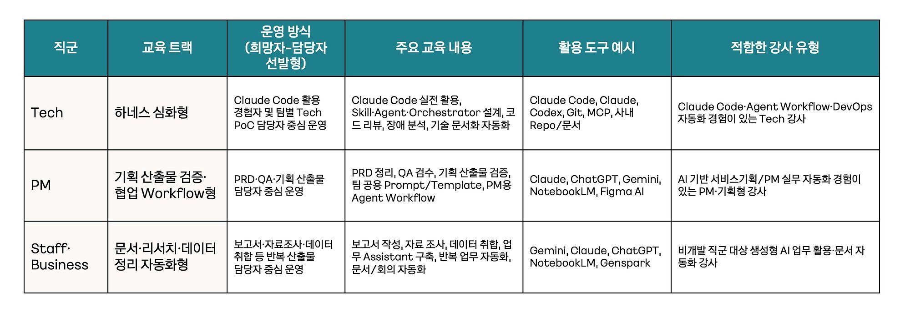
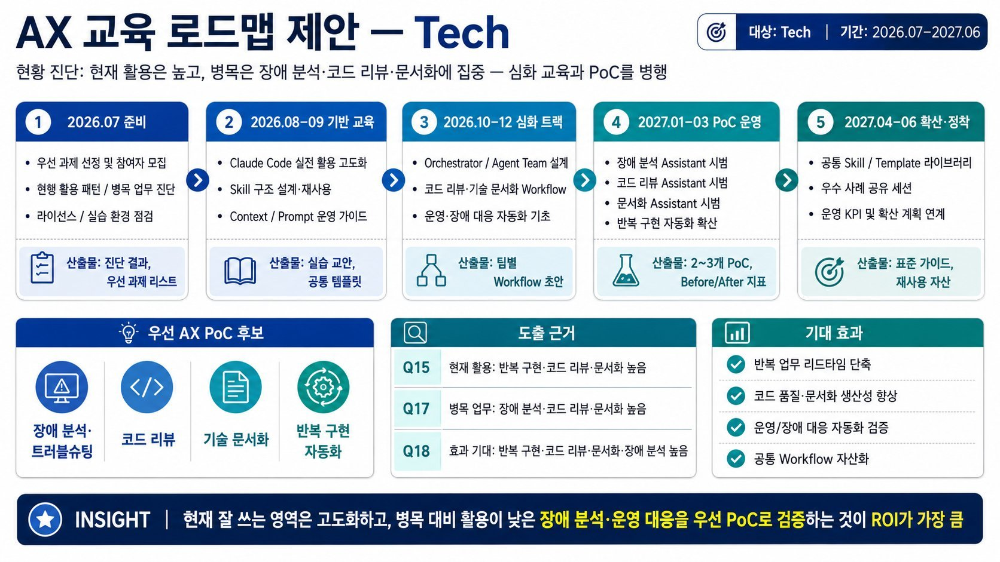
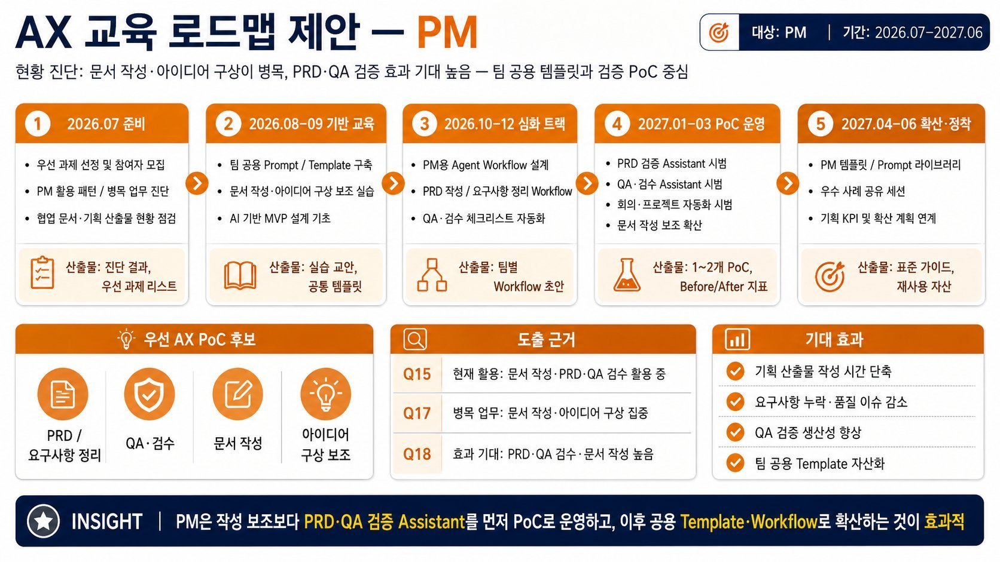
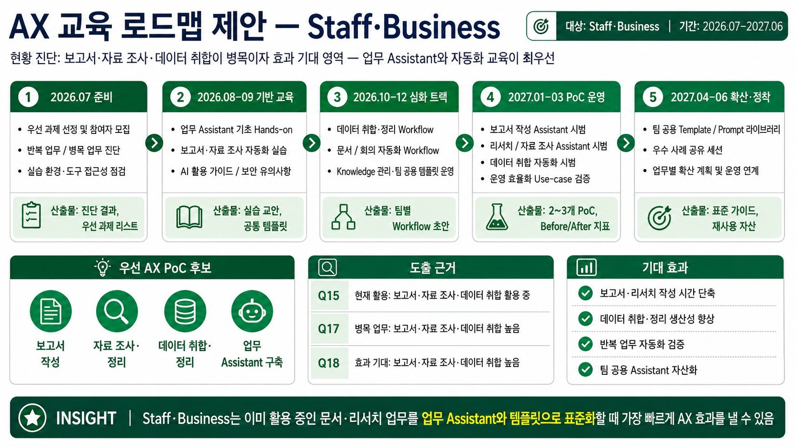
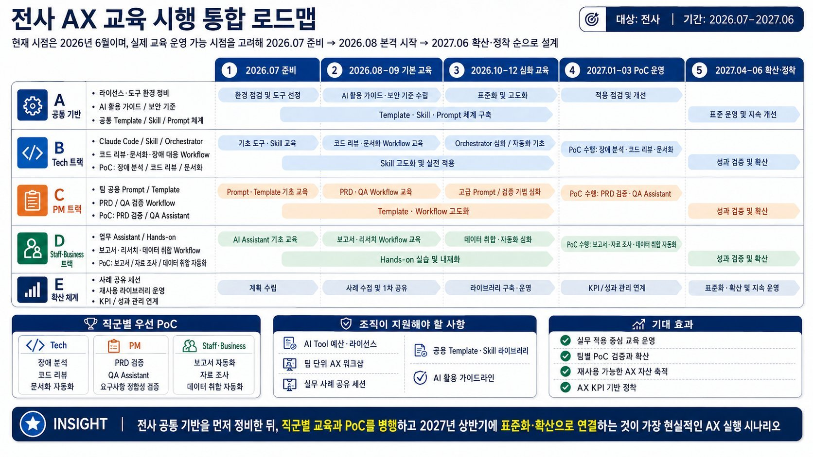

AI를 업무 전반에 활용해 일하는 방식을 개선하고, 사용자에게 전달하는 가치를 높인다.
KEP · Management Support AXS
Business Loop를 실행하는
업무 아키텍처
9월 22일 실장 보고 · 업무의 형상부터 데이터와 연결, 에이전트 실행까지 한 단계 깊게 설계합니다.
Operating Model
Business Loop
입력에서 학습까지, 결과가 다시 다음 업무의 맥락이 됩니다.
01 · SIGNAL입력
사실, 요청, 사건과 상태 변화를 읽습니다.
02 · DECIDE판단
SSOT와 운영 규칙으로 계획을 만듭니다.
03 · ACT실행
승인된 범위를 실제 시스템에 반영합니다.
04 · LEARN학습
결과를 검증하고 원장에 기록합니다.
“업무처리”가 아니라 “업무대화”. 살아 있는 업무는 입력을 먹고 출력물을 만들며 계속 진화한다.
Birth → Growth → Differentiation → Metabolism → Death / Archive
One Level Deeper
에이전트가 실제 업무에서 일하는 구조
Business Loop를 실행 가능하게 만드는 다섯 층
업무 형상 정의
업무가 시작되는 신호, 대상, 판단 규칙, 책임자, 승인점, 결과와 완료조건을 명시
데이터 기준 구축
SSOT·소유자·갱신주기·최신성·정확성 검증 방법을 정해 신뢰 가능한 맥락 확보
에이전트 업무 수행
현재 상태를 읽고, 계획을 만들고, 승인된 범위에서 작업하며 예외를 사람에게 전달
시스템 연결
Google·GAM·Claude Admin 등 실제 업무 시스템의 조회·반영 API와 권한을 설계
검증·원장 기록
실행 뒤 대상 시스템을 재조회하고 차이를 검증해 원장과 다음 업무 입력으로 환류
PoC의 최소 설계 문서: ① 업무 1장 설명 ② SSOT·갱신 책임 ③ Agent가 할 일과 Human 승인점 ④ 도구/API 연결표 ⑤ 실패·예외 처리 ⑥ 완료 판정과 결과 기록.
업무 표면: 담당자가 일하는 곳에 에이전트를 연결
Sheet에서 대상자를 확인하고 메신저로 안내하는 업무라면, 에이전트가 읽을 범위·초안을 남길 위치·담당자의 승인 방법·발송 결과 확인 위치를 이어야 합니다. 과제별로 실제 사용 시스템을 확인해 연결 대상을 정합니다. Google·GAM·Claude Admin은 기존 아웃라인의 예시이며, 필요한 기능에 따라 구성합니다.
최신성과 신뢰성: 항목별 정본과 사용 조건을 정의
재직 여부, 정산 여부, 연락처는 같은 직원에 관한 정보라도 정본이 다를 수 있습니다. 각 항목의 원천·갱신 책임·기준 시각·허용 가능한 지연을 명시하고, 값이 충돌할 때 적용할 우선순위를 정합니다. 오래되거나 서로 맞지 않는 데이터는 확인 대상으로 돌리고, 기준을 충족한 값으로 처리 계획을 만듭니다.
도구 연결표에는 필요한 조회·변경 기능과 권한, 시험 결과를 남깁니다. API 제공 여부와 접근 권한은 과제별 확인 대상이며, 연결이 확인된 기능부터 검증 범위에 포함합니다.
실제 업무로 풀어 쓴 설계 예시 · 총무파트 확인 전 제안
웰포인트 미정산 안내는 어떻게 달라지는가
- 대상 조회: 정산 마감 기준에 맞춰 후보 내역을 읽고, 원천의 기준 시각과 추출 범위를 기록합니다.
- 대상 판단: 직원 식별자와 정산 상태를 연결해 마감·제외·재안내 규칙을 적용합니다. 불명확한 값은 사유와 함께 예외 목록으로 보냅니다.
- 담당자 검토: 에이전트가 대상 목록·판단 근거·안내 문안을 만들고, 담당자가 수정 사항과 발송 범위를 승인합니다. 첫 시험은 초안 생성까지로 제안합니다.
- 승인된 실행: 발송 연동 단계에서는 정산 상태가 승인 후 바뀌었는지 다시 확인하고, 승인된 대상에게 안내합니다.
- 결과 검증: 발송 요청과 전달 확인을 구분해 기록합니다. 미확인 결과는 담당자에게 넘기고 동일 대상·기간·안내 유형의 중복 처리를 방지합니다.
- 다음 회차 개선: 담당자가 고친 이유를 업무 규칙에 반영합니다. 승인 대상의 처리 결과와 남은 예외를 설명할 수 있어야 완료입니다.
검증 방법: 같은 기간의 수작업 대상 목록과 비교해 누락·불필요한 포함, 목록 작성 시간, 담당자 수정 건수와 중복 안내를 확인합니다. 목표치는 현행 기준선을 측정한 뒤 현업과 합의합니다.
Candidate Backlog
경영부문 후보 과제 19건
19개 후보 과제 표시 · 아래의 ‘접근 제안’은 9/22 논의를 위한 초안이며 실행 승인·진행 상태가 아닙니다.
접근 제안: 기존 GWS 데이터 가공·보고 자동화를 먼저 검증
접근 제안: 인원 리포트 이후 데이터 정의와 권한 검증
접근 제안: 인사 규칙과 예외·설명 절차를 먼저 확정
접근 제안: SAP·복지카드·HR 데이터의 정본과 대사 규칙 확인
접근 제안: ERP 추출·마감 규칙·메신저 발송 승인점 정의
접근 제안: 뉴스 수집 공통 기반과 출처 검증 규칙 활용
선행 확인: 아지트 데이터 접근 및 평가 기준·유효기간
선행 확인: 민감 건강정보 처리 범위와 전문가 검토
접근 제안: HR 정본·발송 승인·업체 회신 검증을 분리
선행 확인: 대상·유소견 기준, 개인정보 권한·보관 정책
선행 확인: 높은 정확도와 최종 법무 승인 체계
선행 확인: 표준양식 Diff·오탐·누락 검증 및 법무 판단
접근 제안: 제한된 범위의 검색·요약부터 검증
원본 검토 의견: 기술기획팀과 별도로 최종 테스트 중
접근 제안: 메시지 승인·저작권·브랜드 검수 기준 정의
접근 제안: 뉴스 수집 공통 기반 재사용
접근 제안: 센터별 원본·합산 규칙·제출값 대사
접근 제안: 공통 뉴스 수집 기반의 키워드 확장
접근 제안: 원문 출처 확인 후 공통 수집 기반에 연결
원본 Sheet의 인사팀 8행 ‘중책예산 사용 내역 알람’은 내용·번호·조건이 미기재되어 19건 집계에서 제외했습니다. 과제 목록은 9/21 조회한 정적 스냅샷이며 자동 동기화되지 않습니다.
Proposed Sequencing
착수 순서 제안
팀장 합의 전 가설 · 확정 우선순위 아님
HR 인원 리포트
첫 범위: 한 기준일의 재직 인원을 조직별로 집계하고 원천과 대조합니다. 예측 기능은 별도로 검증합니다.
필요 조건: 재직·조직 정의, 기준일과 정본, 데이터 접근 권한.
다음 단계: 현행 집계와 모든 차이를 설명하고 담당자가 결과를 수용하면 주기적 보고로 확장합니다.
웰포인트 미정산 안내
첫 범위: 한 정산 기간의 대상 목록, 제외 사유와 안내 초안을 만듭니다.
필요 조건: 정산 반영 시점, 마감 규칙, 직원 식별자와 연락처 정본.
다음 단계: 수작업 목록과 대사하고 담당자의 수정 사유를 확인한 뒤 발송 연동 여부를 판단합니다.
뉴스 수집·공유
첫 범위: 기존 구현 상태를 확인한 뒤 한 주제의 출처 포함 요약과 검토 목록을 평가합니다.
필요 조건: 운영 주체, 실제 테스트 결과, 수집 범위와 공유 기준.
다음 단계: 누락·중복·검토 시간을 비교하고 다른 뉴스 과제에 공통 기능을 사용할 수 있는지 확인합니다.
선정 방식: 팀장 대화에서 사용자 가치·데이터 준비도·담당자 검증 여력을 확인해 첫 과제를 고릅니다. 세 후보의 동시 착수를 전제하지 않습니다. 법무·건강정보 과제는 검색·비교·근거 제시 등 전문가 검토를 돕는 범위를 먼저 구체화합니다.
19개 요청에서 공통으로 만들 수 있는 것
| 처리 유형 | 해당 과제 | 공통 설계 내용 |
|---|---|---|
| 수집·선별·공유 5건 | 안전·법령, 일·주간 뉴스, 언론사 인사·부고, 자사·경쟁사, 정부·공공기관 인사 | 출처·게시 시점, 중복 제거, 주제 선별과 공유 전 검토 |
| 집계·대사·리포트 4건 | 인원, 인건비·초과근무, 웰포인트 과세·공제, 전력 사용량 | 항목 정의, 기준일과 원본·결과 합계 대사 |
| 상태 확인·누락 안내 5건 | 근태, 미정산, 적격수급인, 외부기관 명부, 검진 대상·사후관리 | 대상·기한·상태 규칙, 예외와 전달·회신 기록 |
| 전문 판단 지원·콘텐츠 5건 | 검진 추천, 계약 동일성, 조항 검토, 법무 의견 검색, 카드뉴스·쇼츠 | 근거 추적, 원문 비교와 전문가·브랜드 검수 |
공통 기능을 찾기 위한 재분류 제안입니다. 데이터 접근 범위는 업무별로 정합니다. 원본의 ‘뉴스 최종 테스트’ 등 검토 의견은 작성 시점과 이후 변경 여부를 확인해야 합니다.
AXS TF Alignment
AXS TF 구성원 공감대 형성 자료
「KEP_AXS_Outline_NonTech_v2」 기반 핵심 요약 · 기존 팀장 설명자료를 AXS TF 구성원 대상 공감대 형성 자료로 활용
활용 목적과 참여 구성원
Business Loop 추진 방향과 SSOT·하네스의 공통 이해 형성 · 사람과 Agent의 역할 구분 · TF 내 과제·협업 방식 논의를 위한 사전 공유
공개용 자료 · 구성원 이름·계정·소속별 직책·근무시간 제외
AXS TF 구성원 6명 · 공개본에서는 개인별 명단 제외 · TF 내 개별 담당 과제·역할은 별도 협의
1. 목적과 전략 · Business Loop로 운영 전환
- 도구 도입 자체보다 해결할 업무 문제와 사용자 가치에 집중
- 일회성 업무 처리에서 신호 → 판단 → 실행 → 학습의 반복으로 전환
- 업무 종료 시 남긴 학습을 다음 업무의 Context로 재사용
2. 실행 기반 · SSOT · 하네스 · 파일 체계
SSOT · 데이터 정의·고유 식별자, 현재 기준값·상태, 관리 책임자, 갱신 주기·규칙, 원본 위치 명시
하네스 · 현재 조회 → 문제 정의 → 변경 계획 → 승인 범위 실행 → 결과 재조회·검증
파일 체계 · 상세 기획(.DOC), 정의·규칙(.MD), 운영 원장(.CSV), 관계도(MAP), 변경 이력(GIT) 관리
Agent 실행에 필요한 최신 기준과 업무 맥락의 준비·관리 · SSOT 필수 항목 Appendix 확인
3. 역할 분담 · 사람의 정의·승인·검증, Agent의 조회·실행
Human · 최종 판단과 책임
- 문제·목표·완료 조건과 도메인 규칙 정의
- 영향 범위·승인 지점 합의 및 실행 범위 통제
- 도구 선정·조직 예산 운영, 인증·민감 정보 분리 관리
- 협의용 Sheet 교차 검토, 실행 결과 최종 검증, 원장·변경 이력·학습 갱신
Agent · Skill 기반 실행
- 프로젝트 SSOT의 계획과 기준값 확인
- GAM·Google·Claude 등 대상 시스템 조회 및 승인된 계획 반영
- 처리 결과 재조회·검증과 운영 원장 기록
- 협의용 Sheet를 통한 사람의 검토 지원
Agent의 실행 후 재조회·검증과 사람의 최종 검토를 함께 적용
4. 도구 운영 · 팀별 선택과 단계적 조정
팀장·해당 팀의 도구 선정 · 조직당 월 100만 원 AI Pack · 실제 Task 수행과 주간보고 · 매주 화요일 Help Desk
M+1 · 생성기폭넓은 시도
Claude·Codex·Gemini Enterprise 제공 및 선택
M+2 · 조정기이용량 기반 조정
사용량 분포와 토큰 집중도 확인
M+3~ · 안정기조직별 최적화
업무 방식·성과에 맞춘 도구 조합 정착
발표자료에 제시된 운영 정책 요약 · 예산 집행·지원 일정의 실제 확정 여부와 별도 구분
5. 운영 원칙과 성과 판단
운영 원칙 · AI 결과물에 대한 책임 · 사용자 가치 대비 비용 효율 · 직접 개발 전 협업 · 역할 확장과 전문가 승인 · 정보 보호·라이선스 준수
Task · 시간이 지날수록 줄어드는 업무 개입과 수작업 부담
Loop · 모델 성능 향상과 함께 개선 가능한 업무 설계
Krew · 즐거움·고마움·신기함으로 체감하는 AI 경험
최종 평가 · 조직 건강도(역량·동기부여·혁신과 학습·외부지향성), 크루 경험 EX(경력개발·웰빙·개인적 목적), AI 준비도(업무 변화·효율 향상 사례·활용 팁)
단순 도구 사용량보다 시간이 흐른 뒤 남는 업무 변화와 사용자 가치 확인
AXS TF 공감대 형성 자료 내려받기 ↓Leadership Alignment
경영지원실 팀장 공감대
AXS TF의 실행 방향 공유와 별도로, 경영지원실 팀장 대상 업무 우선순위·판단 기준·현업 참여 방식 합의
팀장 대상 핵심 메시지
- 기존 후보 과제에서 팀에 가장 가치 있는 문제 우선 선정
- 실제 자료·판단 규칙·예외를 기준으로 업무 명세와 SSOT 정리
- Agent의 조회·초안 작성·승인 범위 실행과 현업의 최종 검토 분리
- 현행 결과와 비교해 품질·총 투입 시간·검토 부담 확인
팀장과 합의할 세 가지
① 우선 과제 · 시간이 많이 들거나 누락 위험이 큰 업무 1개와 기대 효과
② 업무 기준 · 정본 시스템·데이터, 갱신 책임, 주요 규칙·예외와 완료 조건
③ 현업 참여 · 현업 책임자·검증자·승인자와 참여 범위
팀장 명단·미팅 일정·개별 과제는 추후 협의 · TF 구성원 명단과 구분
공감대 형성 진행안
공통 발표자료·해당 팀 후보 과제 사전 공유 → 실제 업무 사례 확인 → 정본·예외·승인점 확인 → 첫 검증 범위와 참여 방식 합의
남길 결과 · 후보 1건 · 현업 책임자 · 정본 후보 · 검증 범위·완료 기준 · 추가 확인사항
후속 판단 · 현행 대비 품질·시간·수정 부담 확인 후 확대·수정·중단 검토
공통 발표자료의 방향을 팀장 협의에 적용한 진행 제안 · 확정 일정이나 과제 승인으로 간주하지 않음
경영지원실 팀장 공감대 자료 내려받기 ↓AXS Learning Roadmap
향후 AXS 교육 로드맵
1. AX 교육 운영 방향성
[공통] 전 직군 공통 운영안: 직군별 희망자·추천자 기반의 선도 그룹 구성 희망자·팀 추천자 모집 → 소규모 선도 그룹 구성 → 집중 교육 → 실제 업무 PoC → 검증 → 확산
[차이점] 직군별 업무 특성에 따른 교육 내용·PoC 과제 분리 · 공통 AX 방향성 유지 및 교육 도구·강사 유형의 직군별 차등 설계
•Tech 직군 = 하네스 심화형 Claude Code 등 코딩 에이전트의 높은 활용도 · Skill·Agent·Orchestrator·코드 리뷰·장애 분석 등 하네스 구성요소의 심화 수요 확인 → 하네스 엔지니어링 심화 교육 제안
•PM 직군 = 기획 산출물 검증·협업 Workflow형 문서 작성·PRD 정리·QA·검수·와이어프레임·아이디어 구상 등 기획 산출물 중심의 병목·효과 기대 확인 → Claude·ChatGPT·Gemini 기반 PRD/QA 검증 Assistant, 팀 공용 Prompt/Template, 협업 Workflow 구축 교육 제안 • Staff·Business 직군 = 문서·리서치·데이터 정리 자동화형 보고서 작성·자료 조사·데이터 취합·반복 업무 자동화·업무 Assistant 구축 수요 확인 → Gemini·Claude·ChatGPT·NotebookLM 기반 문서·리서치·데이터 정리·회의·보고 자동화 실무 교육 제안  희망자·추천자 기반 선도 그룹 운영의 주요 근거 1️⃣ 직군별 AI 활용 수준·수요의 차이 Tech: 높은 AI 활용 빈도와 심화 수요 · Staff·Business: 기초 활용·업무 자동화 수요 → 동일 교육 일괄 제공 시 난이도·실무 적합성 저하 가능
2️⃣ 실제 업무 적용 경험 중심의 AX 전환 Hands-on 실습·팀 단위 워크샵·실제 업무 기반 프로젝트형 교육 선호 → 관심·적용 의지가 있는 참여자 중심의 업무 PoC 운영 제안
3️⃣ 초기 성공 사례 확보를 통한 확산 주요 확산 장애요인: 실무 성공 사례 부족·적용 방법 불명확 → 선도 그룹의 사례 확보와 Before/After 검증을 통한 타 팀 확산 기반 마련
4️⃣ AI Tool 예산·라이선스 등 운영 자원 제약 PoC 가능성이 높은 그룹에 집중 지원 → 효과 검증 후 지원 범위 확대
희망자·추천자 기반 선도 그룹 운영 → 제한된 자원으로 실질적 성공 사례 확보 → 조직 전체 확산 |
2. 직군별 상세 로드맵:
1) Tech 트랙

[ Tech 교육 로드맵 운영 방향성 ]
대상: Claude Code·Codex 등 개발 보조 도구 활용 경험과 AI 활용 빈도가 높은 직군 · 교육 방향: Agent/Skill 구조 설계, Orchestrator, 코드 리뷰·기술 문서화·장애 대응 자동화를 통한 개발·운영 Workflow 내 AI 내재화
반복 구현·코드 리뷰·기술 문서화: 현재 활용도와 효과 기대 모두 높음 · 장애 분석: 높은 병목·효과 기대 대비 낮은 현재 활용도 → 우선 PoC 후보 검토, 참여 희망자·조직에 따라 최종 선정
[1단계] 희망자·팀 추천자 모집 및 현재 업무 병목·AI 적용 가능 과제 진단
[2단계] Claude Code·Skill·Agent·Orchestrator 실무 집중 교육을 통한 PoC 수행 최소 역량 확보
[3단계] 실제 과제 운영을 위한 PoC 참가자 선정 및 장애 분석·코드 리뷰·기술 문서화·반복 구현 자동화의 업무 적용
[4단계] 적용 전후 리드타임·품질·재작업 감소·문서화 효율 등 Before/After 지표 확인
[5단계] 효과가 확인된 과제의 공통 Skill·Template·Workflow 정리 및 타 팀 확산
------------------------------------------------------------------------------------------------------------------------
2) PM 트랙

[ PM 교육 로드맵 운영 방향성 ]
PM 트랙 설계 방향: 기획 산출물 품질·협업 효율 향상
주요 병목: 문서 작성·와이어프레임·아이디어 구상 · 높은 AI 효과 기대 영역: PRD 정리·QA·검수
교육 구성: 팀 공용 Prompt/Template, PRD 요구사항 정리, QA 체크리스트 자동화, 기획 산출물 검증 Assistant
[1단계] 희망자·서비스/프로젝트 담당 PM 모집 및 기획 업무 병목·AI 적용 가능 과제 진단
[2단계] 팀 공용 Prompt/Template 구축·PRD 정리·문서 작성 보조·AI 기반 MVP 설계 실무 교육
[3단계] PoC 참가자 선정 및 PRD 요구사항 정합성 검토·QA 체크리스트 자동화·기획 문서 개선 제안·회의·프로젝트 운영 자동화의 업무 적용
[4단계] 적용 전후 문서 작성 시간·요구사항 누락 감소·QA 검수 효율·커뮤니케이션 재작업 감소 등 Before/After 지표 확인
[5단계] 효과가 확인된 과제의 팀 공용 Prompt·기획 Template·PRD/QA 검증 Workflow 정리 및 다른 PM·유관 조직 확산
--------------------------------------------------------------------------------------------------------
3) Staff·Business 트랙

[ Staff·Business 교육 로드맵 운영 방향성 ]
설계 대상: 반복성과 산출물 구조가 명확한 보고서 작성·자료 조사·데이터 취합 업무 · 설문상 현재 AI 활용·업무 병목·효과 기대가 높게 겹치는 즉시 적용 후보 영역
교육 구성: 업무 Assistant 구축, 보고서·리서치 자동화, 데이터 정리·분석 자동화, 팀 공용 템플릿 운영
[1단계] 희망자·팀 추천자 모집, 보고서 작성·자료 조사·데이터 취합 등 반복·병목 업무 진단 및 우선 적용 과제 선정
[2단계] 업무 Assistant 활용·보고서·자료 조사 자동화·데이터 정리·분석 자동화·AI 활용 가이드·보안 유의사항 실무 교육
[3단계] PoC 참가자 선정 및 보고서 작성 Assistant·자료 조사·요약 Assistant·데이터 취합 자동화·회의록·문서 정리 자동화의 업무 적용
[4단계] 적용 전후 업무 소요 시간·자료 정리 정확도·보고서 작성 리드타임·반복 업무 감소 정도 등 Before/After 지표 확인
[5단계] 효과가 확인된 과제의 공통 Prompt·보고서 Template·리서치 Workflow·업무 Assistant 가이드 정리 및 Staff·Business 조직 전반 확산
------------------------------------------------------------------------------------------------------------------------
3. 통합 로드맵

전사 AX 교육 추진 단계: 공통 기반 구축 → 직군별 트랙 운영 → 실제 업무 PoC → 성과 검증·확산
2026년 6월 작성 시점 기준, 7월 내 준비 단계 제안: 교육 대상·우선 PoC 과제 선정 및 도구·라이선스·보안 가이드 등 운영 기반 정비
[2026년 8~9월]:
전 직군 공통 교육: AI 활용 가이드·보안·데이터 유의사항·Prompt/Template 기초 · 병행 운영: Tech·PM·Staff/Business별 기본 교육
[2026년 10~12월]:
직군별 심화 트랙 전환 · Tech: Agent/Skill·개발·운영 자동화 · PM: PRD/QA 검증 · Staff·Business: 업무 Assistant·문서·리서치 자동화
[2027년 1~3월]
교육 참여자 중 실제 업무 PoC 적용 선도 그룹 중심의 Before/After 효과 검증
[2027년 4~6월]
검증 사례의 공통 Prompt·Skill·Template·Workflow Library 정리 · 우수 사례 공유·운영 KPI 기반의 조직 전체 확산
교육 → 직군별 실무 PoC → 조직 공통 자산화의 연속적 운영
개인 단위 AI 활용 → 팀 단위 Workflow 확장 → 조직의 AI Native/AX 실행 체계 정착
< 마치며 >
하네스 엔지니어링 교육 후기·AX 교육 수요조사 종합
AI 활용 필요성에 대한 구성원 인식 확보 · 실제 업무 적용을 위한 방법론·도구 환경·실무 사례·공통 가이드 지원 필요
향후 AX 교육 운영 방향: 직군별 실습형 교육 → 실제 업무 PoC → 성과 검증 → 공통 자산화
직군별 운영 유형: Tech — 하네스 심화형 / PM — 기획 산출물 검증·협업 Workflow형 / Staff·Business — 문서·리서치·데이터 정리 자동화형 · 기대 효과: 교육 효과·현업 적용 가능성 향상
설문 데이터 기반의 초기 로드맵 제안
실제 추진 전 구체화 항목: 직군별 희망자 모집, 팀별 적용 가능 과제, 도구·라이선스 지원 범위, 보안·데이터 활용 기준, 성과 측정 지표
선도 그룹의 검증 사례 축적 → 공통 Prompt·Skill·Template·Workflow Library 확산 → 팀 단위 AX 실행 체계로 발전 기대
Operating System
사람과 Agent의 실행 구조
운영 원칙
1
AI가 만든 결과물에 책임을 집니다.
2
사용자 가치에 대해 비용을 효율적으로 사용합니다.
3
직접 만들기 전에 협업을 먼저 시도합니다.
4
역할의 경계를 넓히되 전문가의 승인을 받습니다.
5
정보 보호와 라이선스 정책을 존중합니다.
도구 지급 Lifecycle
M+1생성기
Claude, Codex, Gemini Enterprise를 두려움 없이 탐색
M+2조정기
이용량과 집중도를 확인해 조직별 구성을 조정
M+3~안정기
조직별 최적 도구와 운영 방식으로 정착
Evaluation
AI 활용 평가 지표
효율만이 아니라 설계의 적응력과 크루의 체감까지 봅니다.
손이 덜 가는가?
업무 1회당 담당자의 총 투입 시간과 수정·개입 횟수를 비교합니다. AI 처리 뒤 검토 시간이 늘었는지도 포함합니다.
함께 좋아지는가?
같은 사례와 완료 기준으로 모델·도구 변경 전후의 결과 품질, 처리 시간과 비용을 비교합니다.
좋은 체감이 있는가?
담당자에게 실제로 덜 번거로워졌는지, 결과를 믿고 다시 사용할 수 있는지 묻고 이유를 기록합니다.
Director Brief · Sep 22
9/22 실장 보고 초안
보고용 제안 문구 · 확정 성과로 표현하지 않았습니다.
[경영지원실 AXS · 9월 22일 실장 보고 본문 검토안] 9월 11일 공유한 AXS 방향을 바탕으로, 이번에는 Business Loop를 실제 업무에 적용하기 위한 업무 아키텍처를 구체화하려고 합니다. 담당자가 사용하는 자료, 판단 규칙, 작업 도구와 결과 확인 위치를 연결해 에이전트가 현업의 반복 업무를 수행할 수 있는 환경을 만드는 것이 핵심입니다. 첫째, 업무의 형상을 정의하겠습니다. 실제 사례 한 건을 따라 시작 신호, 처리 대상, 상태 변화, 예외, 담당자 승인과 완료 조건을 명세하겠습니다. 에이전트는 이 명세를 기준으로 현재 상태를 읽고, 처리 계획을 작성하고, 허용된 작업을 수행한 뒤 결과를 확인하고 기록하도록 설계합니다. 둘째, 데이터의 최신성과 신뢰성을 업무 기준으로 관리하겠습니다. 재직 여부·정산 여부·연락처처럼 판단에 필요한 항목별 정본과 갱신 책임을 정하고, 기준 시각과 허용 지연을 확인하겠습니다. 값이 오래되거나 원천 간에 충돌하면 확인 대상으로 돌립니다. 도구와 API는 과제에 필요한 조회·변경 기능, 권한과 오류 처리 방식을 확인해 연결하겠습니다. 예를 들어 웰포인트 미정산 안내는 정산 내역 조회, 마감·제외 규칙 적용, 대상 목록과 문안 작성, 담당자 승인, 발송, 결과 확인으로 구성할 수 있습니다. 첫 시험은 한 정산 기간의 대상 목록과 안내 초안까지로 제한해 현행 수작업 결과와 비교하겠습니다. 이후 발송 기능을 연결할 때는 승인 후 상태 변경과 중복 안내를 확인하고 처리 결과를 원장에 남기겠습니다. 이는 총무파트와 구체 조건을 확인할 설계 제안입니다. 기존 요청 시트에서 확인한 후보는 5개 조직 19건입니다. 공통 처리 방식으로 보면 수집·선별·공유 5건, 집계·대사·리포트 4건, 상태 확인·누락 안내 5건, 전문 판단 지원·콘텐츠 5건으로 묶을 수 있습니다. 뉴스 수집이나 데이터 대사처럼 재사용할 기능을 함께 검토하되, 업무별 데이터와 판단 기준은 현업과 정하겠습니다. 원본에 기록된 뉴스 최종 테스트 등 진행 정보는 담당자에게 현재 상태를 재확인하겠습니다. 초기 후보로 HR 인원 집계, 웰포인트 미정산 안내, 뉴스 수집·공유를 검토하겠습니다. 세 과제를 동시에 시작하는 계획은 아니며, 데이터 준비도와 현업 검증 여력을 확인해 첫 과제를 선정하겠습니다. 각각 한 기준일의 집계, 한 정산 기간의 대상 목록, 한 주제의 뉴스 요약처럼 결과를 대조할 수 있는 범위에서 시작하겠습니다. 법무·건강정보 과제는 전문가가 검토할 근거와 비교 결과를 제공하는 범위를 먼저 구체화하겠습니다. 이를 위해 기존 팀장 설명자료를 AXS TF 구성원 6명 대상 공감대 형성 자료로 활용하려고 합니다. 발표자료를 사전 공유해 Business Loop의 방향과 SSOT·하네스, 사람과 Agent의 역할에 대한 공통 이해를 형성하고 TF 내 과제와 협업 방식을 논의하겠습니다. 이후 각 팀과 후보 과제, 현업 책임자, 정본 후보와 추가 확인사항을 협의하겠습니다. TF 내 개별 담당 과제와 역할은 별도로 정할 사항입니다. 효과는 업무 1회당 총 투입 시간과 수정·개입 횟수, 결과의 누락·오류, 담당자의 신뢰와 재사용 의향으로 확인하겠습니다. 현재 개선 수치는 확보되지 않았으므로 시험 전 기준선을 측정하고 목표를 합의하겠습니다. 모델이나 도구가 바뀔 때도 같은 사례로 다시 비교해 설계가 함께 개선되는지 확인하겠습니다. 실장님께는 업무 아키텍처 중심의 초기 검증 방향, 팀별 후보와 책임자를 정하기 위한 팀장 협의 지원, 데이터·도구 연결 담당과 현업 검증 역할에 대한 협조를 요청드립니다. 예산·완료일·수치 목표는 첫 과제의 범위와 연결 가능성을 확인한 뒤 제시하겠습니다. ※ 사용자 제공 방향과 9/21 원본 조회를 바탕으로 작성한 추진안입니다. 9/11 이후의 실제 협의·연동 결과·확정 일정은 추가 반영이 필요합니다.
Appendix A · SSOT
SSOT에 반드시 포함할 내용
공통 필수 9개 · 에이전트 실행 시 추가 3개
적용 기준 제안 · 9/22 추가 SSOT(Single Source of Truth)는 업무의 사실·규칙을 판단하고 갱신할 때 참조하는 정본이다. 실무자가 바뀌거나 에이전트가 참여해도 같은 대상을 같은 기준으로 판단할 수 있어야 한다. 아래는 경영지원실 AXS에 적용하기 위한 작성 기준 제안이며, 확정된 사내 정책은 아니다.
모든 데이터를 하나의 파일에 모을 필요는 없다. 직원의 재직 상태는 HR 시스템, 정산 상태는 정산 시스템처럼 항목별로 정본과 적용 범위를 하나로 지정하고, SSOT 문서에서 정확한 위치를 안내한다. 리뷰용 Sheet와 보고서는 해당 정본을 참조하며, 그 자체가 정본인지는 별도로 명시한다.
A-1. 모든 업무에 공통으로 필요한 9개 항목
| 필수 항목 | 반드시 작성할 내용 | 작성 완료를 판단할 질문 |
|---|---|---|
| 1. 목적·적용 범위 | 업무명·업무 ID, 사용자, 해결할 문제와 목표 상태, 포함·제외 대상, 산출물 | 어떤 업무와 어떤 판단에 쓰는 기준인지 알 수 있는가? |
| 2. 정본 위치·우선순위 | 항목별 정본 시스템·문서 링크, 정확한 테이블·탭·필드·범위, 원천과 사본 구분, 값 충돌 시 우선순위 | 같은 값이 여러 곳에 있을 때 무엇을 따라야 하는가? |
| 3. 용어·데이터 구조 | 용어와 상태 정의, 필수 필드, 형식·단위·시간대, 고유 식별자, 대상 간 관계와 연결 기준 | 같은 이름·값을 사람과 에이전트가 동일하게 해석할 수 있는가? |
| 4. 소유자·갱신 책임 | 업무 책임자, 데이터 갱신 담당, 규칙 변경 승인자, 확인 요청 경로 | 오류가 나거나 기준이 바뀌면 누가 결정하고 고치는가? |
| 5. 최신성·유효기간 | 데이터 기준 시점, 원천 최종 변경 시각과 조회 시각, 갱신 주기·계기, 허용 지연, 기한 초과 시 처리 | 지금 판단에 써도 되는 값인가? 방금 조회했다는 이유만으로 최신으로 보지 않는가? |
| 6. 판단 규칙·예외 | 대상 포함·제외 조건, 계산·상태 전환 규칙, 규칙의 근거와 적용일, 예외와 충돌 해결 절차 | 같은 입력으로 같은 판단을 내리고 그 이유를 설명할 수 있는가? |
| 7. 신뢰성 검증·근거 | 필수값·중복·범위 검사, 원천 대사 방법, 반드시 유지할 조건, 허용 오차, 불일치 처리와 근거 위치 | 누락·오류·충돌을 어떻게 발견하고 해결하는가? |
| 8. 접근·정보 관리 | 조회·수정 가능한 역할, 에이전트 허용 범위, 정보 분류, 보관·삭제 기준, 인증정보의 별도 관리 위치 | 누가 어떤 정보에 접근하고 변경할 수 있는가? |
| 9. 버전·변경 이력 | 현재 유효 버전·상태, 시행일, 변경자·변경 이유·승인 근거, 이전 버전과 보관 위치 | 현재 기준이 무엇이며, 과거 판단에 사용한 기준을 다시 확인할 수 있는가? |
정확한 값을 아직 모르면 ‘확인 필요’와 확인 책임자·예정일을 함께 적는다. 업무 판단에 영향을 주는 필수 기준이 미확정이면 해당 판단과 후속 실행은 보류하고, 확인 가능한 범위의 검토부터 진행한다. 적용되지 않는 항목은 공란 대신 ‘해당 없음’과 이유를 남긴다.
A-2. 에이전트가 실행에 참여할 때 추가할 3개 항목
SSOT가 업무 판단의 기준을 제공한다면, 연결된 실행 명세는 그 기준을 실제 시스템에 적용하는 방법을 정한다. 아래 내용을 SSOT에 포함하거나, 정본으로 지정한 실행 명세를 링크한다.
| 추가 필수 항목 | 반드시 작성할 내용 |
|---|---|
| 10. 도구·시스템 연결 | 조회·변경 대상 시스템과 필드, 사용할 도구/API, 인증 주체와 권한 범위, 입력·출력의 연결 규칙, 연결 확인 상태. 비밀번호·토큰·인증키는 본문에 저장하지 않는다. |
| 11. 사람·에이전트의 역할 | 에이전트가 조회·작성·실행할 범위, 사람의 판단·승인 지점, 승인 대상과 유효 범위, 중단·재시도·담당자 전달 조건 |
| 12. 완료 기준·결과 기록 | 완료로 인정할 상태, 실행 후 원천 재조회 방법, 중복 처리 방지 기준, 실패·부분 완료 처리, 운영 원장 위치와 기록 항목 |
운영 원장에는 실행 ID, 대상 ID, 사용한 원천의 기준 시점과 규칙 버전, 판단 근거, 승인 내역, 실행 시각·결과, 재조회 검증, 예외·후속 조치를 남긴다. 요청 성공만으로 업무 완료를 확정하지 않고 업무별 완료 조건과 대조한다.
A-3. 작성 예시 — 웰포인트 미정산 안내
아래는 작성 형태를 보여주는 예시다. 실제 시스템·담당자·마감일·허용 지연은 총무파트와 확인해야 한다.
| 항목 | 기재 예시 |
|---|---|
| 목적·범위 | 특정 정산 기간의 미정산 대상 목록과 안내 초안을 생성. 초기 시험은 담당자 검토까지이며 자동 발송은 범위에서 제외 |
| 정본·식별자 | 정산 상태: [확인할 시스템·필드]. 재직 여부: [HR 정본·필드]. 연락처: [정본·필드]. 건별 식별자는 [정산 건 ID], 직원 연결은 [직원 고유 ID] 사용 여부 확인 |
| 책임·최신성 | 업무 책임자·갱신 담당·승인자: [각 지정 필요]. 데이터 기준 시각·최종 변경·조회 시각을 기록. 허용 지연: [현업 합의 필요]; 초과하면 해당 대상 확정 보류 |
| 규칙·검증 | 대상 기간·마감·정산 상태·제외 조건을 명시. 같은 기준 시점의 수작업 목록과 비교하고 차이의 사유를 기록. 중복·식별 불가·상태 충돌은 확인 목록으로 분리 |
| 접근·변경 | 역할별 조회 범위를 지정하고 인증정보는 별도 보관. 규칙의 버전·적용일·변경 이유·승인 근거 기록 |
| 실행·완료 | 초기 시험은 대상·제외 사유·초안과 대사 결과를 담당자가 검토하면 완료. 발송 연동 시 승인 범위, 발송 직전 상태 재확인, 중복 발송 방지 기준과 전달 결과 확인을 추가 |
A-4. 파일과 시스템을 연결하는 방법
- 업무 기준 문서(Markdown 또는 문서 도구): 목적·범위, 용어, 규칙, 책임, 항목별 정본 링크와 현재 유효 버전을 관리한다.
- 원천 시스템·데이터: 실제 값을 갱신하는 위치다. 내려받은 CSV나 복제 Sheet는 정본으로 별도 지정하지 않았다면 조회 시점이 붙은 사본으로 취급한다.
- 실행 명세·운영 원장(CSV·Sheet·DB 등): 도구 연결, 승인점·완료 기준과 건별 실행·검증 결과를 관리한다. 기준 문서에서 정확한 위치를 연결한다.
- 다이어그램·변경 이력: 자산·조직·배정 관계처럼 관계가 복잡하면 도식으로 보완한다. Git 또는 문서 도구의 이력 기능으로 기준 변경을 추적한다.
별도 시스템을 먼저 도입할 필요는 없다. 기존 업무 문서를 시작점으로 삼아 위 항목과 원천 링크를 채우고, 담당자와 에이전트가 정답의 위치·적용 조건·갱신 책임을 동일하게 찾을 수 있는 상태를 만든다.
Appendix A 내려받기 ↓